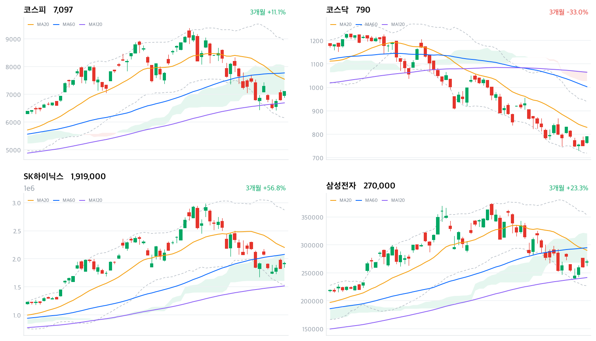

오늘 급등의 시작은 전날 발표된 알파벳의 2분기 실적과 AI 설비투자 가이던스 상향이다. AI 데이터센터 수요 위축 우려가 옅어지자 외국인은 삼성전자·SK하이닉스를 4거래일 연속 순매수했고, 랠리는 미국發 전력난 부각에 편승한 전력설비·2차전지·신재생 테마로 확산되며 코스닥 매수 사이드카까지 촉발했다.
외국인 순매수(코스피 2조1,359억·코스닥 1,675억, 모두 당일 잠정)와 원화 강세(-13.3원), 업종 breadth 데이터가 보여주는 폭넓은 상승은 서로 어긋나지 않는다. 개인이 코스피에서 2조2,077억원을 순매도한 것은 반등 국면 차익실현으로 볼 수 있지만, SK하이닉스 인버스 ETF에 3.69조원이 몰린 점은 일부 개인 자금이 이 급등을 아직 신뢰하지 않는다는 뜻이다.
오늘 수급 수치는 모두 잠정치이므로 익일 확정치에서 외국인 매수 강도가 유지되는지부터 확인해야 한다. 이어 코스닥 매수 사이드카 발동 이후 후속 거래일의 거래대금·개인 수급 흐름, 그리고 전력인프라·2차전지 테마의 거래대금이 반도체 못지않게 유지되는지가 이 랠리의 지속성을 가늠할 다음 관문이다.
| 지수 | 종가 | 등락률 | 일중 고가 / 저가 |
|---|---|---|---|
| 코스피 | 7,096.89 | +4.40% | 7,108.44 / 6,892.64 |
| 코스닥 | 790.28 | +5.22% | — |
코스피는 전일 종가(6,797.70) 대비 2.4% 갭업한 6,963.35에서 출발했다. 개장 한 시간 만인 10시 7,028.81까지 상승 폭을 넓혔다.
다만 오전 11시대 들어 되돌림이 나타나며 11시 30분 6,916.65까지 밀렸는데, 이는 이날 장중 저점(6,892.64)과 가까운 구간이다. 정오를 지나며 낙폭을 만회해 13시 30분 7,068.12까지 재차 올라섰다.
14시 한 차례 조정(7,044.00)을 거친 뒤 14시 30분 7,099.15로 고점권에 진입해 장중 고가(7,108.44)에 근접했다. 15시 7,051.56으로 밀렸다가 마감 직전 30분 동안 다시 7,096.82까지 반등해, 종가는 고점 부근인 7,096.89(+4.40%)로 마쳤다.
이날 급등의 진원지는 전날 발표된 알파벳 2분기 실적이었다. 클라우드 매출 호조와 함께 2026년 설비투자(CapEx) 가이던스를 1,900억 달러에서 1,950억~2,050억 달러로 올리자 AI 데이터센터 수요 위축 우려가 옅어졌고, 그 훈풍이 곧바로 국내 반도체 대형주로 옮겨붙었다.
코스닥에서는 코스닥150 선물이 전 거래일 대비 6.29%(1,341.50pt) 급등하고 현물도 5.27%(1,333.63pt) 오른 상태가 1분간 유지되며 매수 사이드카가 발동했다. 지난 7월15일 이후 5거래일 만의 사이드카로, 코스피 대형주 랠리가 코스닥 전반으로 번졌다는 신호다.
일중 궤적은 코스피 30분봉(Naver 금융) 기준. 실적·사이드카 배경은 머니투데이·코리아헤럴드·코리아중앙데일리·뉴스핌 보도 참조.

최근 3개월 일봉(캔들)에 이동평균(20·60·120일)·볼린저밴드(20일±2σ)·일목 구름대를 오버레이 — 코스피·코스닥·SK하이닉스·삼성전자, 상승 녹색·하락 적색.
위 일봉 차트의 이동평균(20·60·120일)·볼린저밴드(20일±2σ)·일목 구름대(9/26/52)를 종가 기준으로 계산한 조건부 시나리오다. 특정 레벨의 돌파·이탈이 방향 트리거이며, 오늘은 급등일이었으나 4종 모두 MA20 아래에 머물러 반등의 지속 여부는 저항 회복에 달려 있다.
코스피는 종가 7,096.89포인트로 MA20(7,545.12)·MA60(7,770.78)을 밑돌지만 일목 구름(6,988.31~8,035.24) 안에 자리해 추세는 혼조다. MA20 7,545.12를 회복하면 구름 상단 8,035.24, 이어 스윙 고점 9,044.04까지 반등 여지가 열린다. 반대로 구름 하단 6,988.31을 내주면 스윙 저점 6,429.03·볼린저 하단 6,157.29까지 밀릴 수 있으며, MA120(6,691.84)이 최후 지지선이다.
코스닥은 종가 790.28포인트로 MA와 구름이 모두 위에 놓인 역배열이라 하락 추세가 뚜렷하다. 구름(1,027.03~1,068.94) 아래에 있어 오늘 +5.2% 급등도 추세 전환보다 낙폭과대 반등에 가깝다. 반등이 이어지려면 먼저 MA20 829.20를 회복해 볼린저 상단 939.14·스윙 고점 955.45에 도전해야 하고, 스윙 저점 730.81·볼린저 하단 719.27를 이탈하면 신저점 탐색이 불가피하다.
SK하이닉스는 장기 정배열(MA120 1,517,458)이 살아 있는 눌림목 구간으로, 종가 1,919,000원은 구름(1,606,500~2,063,250) 안에 있다. MA60 2,078,283·구름 상단 2,063,250을 회복하면 MA20 2,202,850을 거쳐 스윙 고점 2,987,000까지 상승 재개가 가능하고, 구름 하단 1,606,500·볼린저 하단 1,535,154를 이탈하면 MA120·스윙 저점 1,193,000까지 조정이 열린다.
삼성전자는 종가 270,000원이 구름 하단(268,500)에 바짝 붙어 이 레벨의 지지 여부가 단기 방향을 가른다. MA20 290,250을 되찾으면 구름 상단 320,875·스윙 고점 362,500이 목표가 되고, 구름 하단 268,500을 내주면 MA120 241,575·스윙 저점 240,000, 나아가 216,500까지 밀릴 수 있다.
기계적으로 계산된 조건부 기술 셋업이며 투자 권유가 아니다. 레벨은 익일 종가로 갱신된다.
| 순매수 (억원) | 개인 | 외국인 | 기관 |
|---|---|---|---|
| 코스피 | -22,077 | +21,359 | +976 |
| 코스닥 | -2,373 | +1,675 | +643 |
코스피 상승의 주역은 다시 외국인이었다. 외국인은 2조1,359억원(당일 잠정)을 순매수하며 4거래일 연속 매수 행진을 이어갔고, 전날(2조6,211억) 대비 규모는 줄었지만 지수를 끌어올리기에는 충분했다. 개인은 2조2,077억원을 순매도(당일 잠정)하며 반등 국면에서 차익실현에 나섰고, 기관은 976억원 순매수(당일 잠정)에 그쳐 존재감은 크지 않았다.
코스닥에서도 외국인이 1,675억원 순매수(당일 잠정)로 방향을 지수와 맞췄다. 개인은 2,373억원 순매도(당일 잠정)했는데, 이는 대형주 차익실현 자금이 코스닥 저가 매수로 곧장 옮겨가지 않고 관망세를 택했다는 뜻으로 읽힌다. 기관도 643억원 순매수(당일 잠정)로 가세하며 두 시장 모두 외국인·기관 동반 매수라는 드문 조합이 만들어졌다.
전날(7/22)이 외국인 홀로 사고 개인·기관이 맞서 판 '나홀로 반등'이었다면, 오늘은 외국인·기관이 함께 사고 개인만 판 구도로 바뀌었다. 매수 주체가 넓어진 점은 랠리의 신뢰도를 높이는 신호지만, 오늘 수치가 모두 잠정치라 익일 확정 과정에서 외국인 순매수 규모가 조정될 가능성은 남아 있다.
| 순매수 (억원) | 차익거래 | 비차익거래 | 전체 |
|---|---|---|---|
| 코스피 | -428 | +18,001 | +17,573 |
| 코스닥 | +33 | +1,564 | +1,597 |
오늘 프로그램 매매는 비차익거래가 주도했다. 코스피에서 비차익 순매수가 1조8,001억원에 달한 반면 차익거래는 428억원 순매도에 그쳐, 선물·현물 가격차를 노린 기계적 차익 유입이 아니라 바스켓 단위의 방향성 매수가 지수를 끌어올렸음을 보여준다. 이는 외국인 순매수(2조1,359억, 당일 잠정)와 방향이 일치하며, 프로그램 비차익 매수의 상당 부분이 외국인 자금으로 추정된다. 코스닥도 비차익 1,564억원 순매수로 매수 사이드카 발동과 궤를 같이했다.
수급은 발행 시점 기준 당일(2026-07-23) 잠정치이며, 익일 확정 과정에서 조정될 수 있다.
| 종목·그룹 | 구분 | 거래대금 |
|---|---|---|
| SK하이닉스 | 개별종목 | 7.78조 |
| SK하이닉스 레버리지 | 단일종목 롱 ×4 | 5.66조 |
| 삼성전자 | 개별종목 | 4.30조 |
| SK하이닉스 인버스 | 단일종목 숏 ×1 | 3.69조 |
| 지수 레버리지 ETF | 지수 롱 ×2 | 1.87조 |
| 지수 인버스 ETF | 지수 숏 ×6 | 1.70조 |
| 삼성전자 레버리지 | 단일종목 롱 ×2 | 1.48조 |
| KODEX 200 | 지수 ETF | 1.43조 |
| SK이터닉스 | 개별종목 | 1.36조 |
| TIGER 반도체TOP10 | 테마 ETF | 0.47조 |
거래대금 최상위는 반도체 두 종목이 휩쓸었다. SK하이닉스가 7.78조원으로 압도적 1위였고 삼성전자(4.30조)가 뒤를 이었는데, 두 종목의 단일종목 레버리지·인버스 ETF까지 더하면 반도체 두 종목에 몰린 자금은 20조원에 육박한다.
방향성 심리를 갈라보면 SK하이닉스는 레버리지(롱) 5.66조원이 인버스(숏) 3.69조원을 앞섰고, 지수 ETF에서도 레버리지(1.87조)가 인버스(1.70조)를 웃돌아 개인 투자자의 상승 베팅이 우세했다. 다만 숏 잔액도 만만치 않게 쌓인 만큼, 이 급등을 따라가지 못하고 반대매매·되돌림에 대비하는 자금이 여전히 두텁다.
SK이터닉스(1.36조)와 반도체 테마 ETF(TIGER 반도체TOP10, 0.47조)도 상위권에 이름을 올려, 오늘 자금 쏠림이 반도체 대형주에 국한되지 않고 전력·재생에너지 테마로도 번졌음을 뒷받침한다.
거래대금은 정규화 집계 — 같은 기초자산 ETF를 방향별로 묶고 해외지수 ETF는 제외했다. 원자료는 백만원 단위이며 표에는 조원으로 환산했다.
대표 섹터 ETF 기준으로는 건설(+9.70%)이 하루 수익률 1위였고 2차전지(+9.53%)·조선(+8.64%)·방산(+8.49%)이 뒤를 이었다. 그러나 세부 업종 데이터로 교차 확인하면 건설은 상승 종목 비중(breadth) 0.808에 유동성 뒷받침이 약해(좁은 상승·개별종목), 지수 ETF 수익률만큼 업종 전체가 고르게 오른 것은 아니다.
반대로 에너지장비및서비스(+16.39%, breadth 0.882)·전기장비(+11.53%, breadth 0.886)·전기제품(+9.06%, breadth 0.886)은 상승 종목 비중이 90%에 육박해 폭넓은 주도 업종으로 확인된다. 반도체와반도체장비 업종도 171개 종목 중 144개가 올라(+3.87%, breadth 0.842) 대장주 쏠림을 넘어선 업종 전체의 동반 강세를 나타냈다.
우주항공과국방(+8.73%, breadth 0.970)·화학(+8.20%, breadth 0.918)·조선(+7.71%, breadth 0.871)도 폭넓은 상승으로 분류돼, 오늘 랠리는 몇몇 대형주의 착시가 아니라 다수 업종이 함께 움직인 장세다. 다만 IT서비스(+8.10%)·생물공학(+8.39%)·양방향미디어와서비스(+9.27%)는 좁은 상승·개별종목으로 분류돼, 상승률만 보고 주도 업종으로 단정하기는 이르다.
1D~1Y 막대는 대표 섹터 ETF 수익률, 세부 breadth·주도 판정은 업종별 상승 종목 비중 교차 확인 기준.
| 테마 | 등락률 |
|---|---|
| 전선 | +12.42% |
| 고체산화물 연료전지(SOFC) | +11.69% |
| 2차전지(생산) | +10.51% |
| 정유 | +9.51% |
| 전력설비 | +9.00% |
| 우주태양광(페로브스카이트 등) | +8.97% |
| 풍력에너지 | +8.84% |
| 2차전지(나트륨이온) | +8.70% |
| 건설 대표주 | +8.57% |
| 전력저장장치(ESS) | +8.42% |
| 인터넷 대표주 | +8.19% |
| 태양광에너지 | +8.17% |
| 해저터널(지하화/지하도로 등) | +7.90% |
| 원자력발전소 해체 | +7.81% |
| 원자력발전 | +7.66% |
테마 상위 15개 중 절반 이상이 전력 인프라와 직결된다. 전선(+12.42%)이 1위였고 전력설비(+9.00%)·전력저장장치/ESS(+8.42%)·원자력발전소 해체(+7.81%)·원자력발전(+7.66%)·풍력에너지(+8.84%)·태양광에너지(+8.17%)·우주태양광(+8.97%)까지 발전원을 가리지 않고 전력 관련 테마가 총출동했다.
미국 데이터센터 밀집 지역의 전력난이 부각되며 국내 전력설비·전선주에 매수세가 몰렸다는 보도(이투데이)와, 앞선 업종 데이터에서 확인한 에너지장비및서비스·전기장비의 폭넓은 상승이 정확히 겹친다. 테마 등락률이 업종 breadth 데이터로도 뒷받침되는 만큼, 이번 전력인프라 랠리는 뉴스에 편승한 일시적 쏠림이 아니라 실제 자금이 뒷받침된 움직임이다.
2차전지도 생산(+10.51%)·나트륨이온(+8.70%) 두 테마가 나란히 상위권에 올랐고, LG에너지솔루션(+8.41%)이 대표주로 힘을 보탰다. 반면 정유(+9.51%)·건설 대표주(+8.57%)·해저터널(+7.90%)·인터넷 대표주(+8.19%)는 리서치 노트에서 구체적 촉매가 확인되지 않아, 전력·2차전지만큼 재료의 실체를 단정하기는 어렵다.
테마 랭킹·등락률은 kr_theme.json 기준.
| 종목 | 등락률 | 비고 |
|---|---|---|
| SK하이닉스 | +4.86% | 거래대금 1위, 레버리지 ETF에 개인 상승 베팅 집중 |
| 삼성전자 | +3.65~3.70% | 거래대금 2위 |
| 삼성전기 | +7.66% | 반도체 소재·부품 훈풍 |
| LG에너지솔루션 | +8.41% | 2차전지(생산) 테마 대표주 |
| 현대차 | +3.35% | 자동차 업종 동반 강세(+3.05%, breadth 0.917) |
| 삼성전자우 | +3.24% | - |
| 삼성생명 | +2.97% | - |
| LS ELECTRIC · HD현대일렉트릭 | 급등 | 전력설비 테마 대장주, 구체 등락률은 보도에 제시되지 않음 |
거래대금과 업종 데이터에서 이미 드러났듯 SK하이닉스(+4.86%)·삼성전자(+3.65~3.70%)가 이날의 얼굴이었다. 삼성전기(+7.66%)·삼성전자우(+3.24%)까지 더하면 삼성·SK 반도체 밸류체인 전반이 동반 강세를 나타냈다.
2차전지 대표주 LG에너지솔루션(+8.41%)은 2차전지(생산) 테마 상승을 이끌었고, 자동차 업종 강세(+3.05%, breadth 0.917) 속에 현대차(+3.35%)도 함께 올랐다. 전력설비 테마의 대장주 격인 LS ELECTRIC·HD현대일렉트릭은 미국 데이터센터發 전력난 부각에 급등했다고 보도됐으나, 구체적 등락률은 리서치 노트에 제시되지 않았다.
등락률은 research_notes.md에 인용된 보도(머니투데이·이비엔뉴스·아주경제·이투데이 등) 기준이며, kr/data 원자료에는 개별 종목 시세가 포함되지 않는다.
원/달러 환율은 15시30분 기준 1,466.80원으로 전일 대비 13.3원 하락하며 원화가 강세를 보였다. 이는 외국인의 대규모 코스피 순매수(2조1,359억원, 당일 잠정)와 방향이 일치하며, 외국인 자금 유입이 달러 매도·원화 매수로 곧장 이어진 전형적인 흐름이다.
국고채 금리는 이번 데이터 파이프라인에 아직 포함되지 않아 이번 호에는 반영하지 못했다. 참고로 한국은행은 지난 7월16일 금융통화위원회에서 기준금리를 2.50%에서 2.75%로 0.25%포인트 인상해 2023년 1월 이후 3년 6개월 만에 긴축으로 돌아섰고, 6월 소비자물가 상승률(3.2%)이 그 배경으로 꼽힌다.
환율은 머니투데이 보도(15:30 기준) 인용. 국고채 금리는 데이터 확보 후 다음 호부터 반영할 예정이다.
한국은행 금통위는 7월16일 기준금리를 2.50%→2.75%로 올리며 2023년 1월 이후 3년 6개월 만에 긴축 기조로 전환했다. 6월 소비자물가 상승률이 3.2%로 2개월 연속 3%대를 기록한 것이 배경이었고, 통상 금리 인상은 위험자산에 부담 요인이지만 오늘은 알파벳발 AI 훈풍이 그 부담을 압도했다.
밸류업 프로그램과 MSCI 선진지수 편입 기대는 하반기 코스피 추가 상승 시나리오의 배경으로 거론된다(한국은행·한국거래소 기업가치제고 백서 등 인용). MSCI 정례 리뷰 결과와 밸류업 이행 공시 진행 상황이 향후 이 시나리오의 확인 트리거가 될 전망이다.
미국 데이터센터發 전력수요 확대는 국내 에너지 정책에도 파급될 수 있는 재료다. 원자력·재생에너지 관련 정책 지원 여부가 앞으로 전력인프라 테마의 지속성을 가늠할 변수로 남는다.
정책 배경은 웰페어헬로·한국은행 통화신용정책보고서·KRX 기업가치제고프로그램 백서 인용.